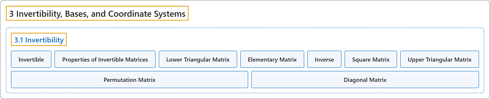

3.1 Invertibility
Classification

Glossary
| Term | Definition | 中文翻译 | Source |
|---|---|---|---|
| 3.1 Invertibility 可逆性 |
(No definition) | （无定义） | Austin, 2023, section 3.1 |
| Invertible 可逆 |
"An \(n\times n\) matrix \(A\) is called invertible if there is a matrix \(B\) such that \(AB = I_n\), where \(I_n\) is the \(n\times n\) identity matrix." | 对于 \(n\times n\) 矩阵 \(A\)，如果存在矩阵 \(B\) 使得 \(AB = I_n\)，其中 \(I_n\) 是 \(n\times n\) 单位矩阵，就称 \(A\) 可逆。 | Austin, 2023, Definition 3.1.2 |
| Properties of Invertible Matrices 可逆矩阵的性质 |
"An \(n\times n\) matrix \(A\) is invertible if and only if \(A\sim I\). If \(A\) is invertible, then the solution to the equation \(A\mathbf{x} = \mathbf{b}\) is given by \(\mathbf{x} = A^{-1}\mathbf{b}\). We can find \(A^{-1}\) by finding the reduced row echelon form of \(\left[\begin{array}{r\|r} A & I \end{array}\right]\); namely, \(\left[\begin{array}{r\|r} A & I \end{array}\right] \sim \left[\begin{array}{r\|r} I & A^{-1} \end{array}\right]\). If \(A\) and \(B\) are two invertible \(n\times n\) matrices, then their product \(AB\) is also invertible and \((AB)^{-1} = B^{-1}A^{-1}\)." | \(n\times n\) 矩阵 \(A\) 可逆，当且仅当 \(A\sim I\)。若 \(A\) 可逆，则方程 \(A\mathbf{x} = \mathbf{b}\) 的解为 \(\mathbf{x} = A^{-1}\mathbf{b}\)。求 \(\left[\begin{array}{r\|r} A & I \end{array}\right]\) 的行最简形就能得到 \(A^{-1}\)，即 \(\left[\begin{array}{r\|r} A & I \end{array}\right] \sim \left[\begin{array}{r\|r} I & A^{-1} \end{array}\right]\)。若 \(A\) 与 \(B\) 是两个可逆的 \(n\times n\) 矩阵，则它们的乘积 \(AB\) 也可逆，且 \((AB)^{-1} = B^{-1}A^{-1}\)。 | Austin, 2023, Proposition 3.1.10 |
| Lower Triangular Matrix 下三角矩阵 |
"We say that a matrix \(A\) is lower triangular if all its entries above the diagonal are zero." | 如果矩阵 \(A\) 的对角线上方的元素全为零，就称 \(A\) 是下三角矩阵。 | Austin, 2023, Definition 3.1.11 |
| Elementary Matrix 初等矩阵 |
"The following are examples of matrices, known as elementary matrices, that perform the row operations on a matrix having three rows." | 下面是一些称为初等矩阵的矩阵的例子，它们对有三行的矩阵施行行变换。 | Austin, 2023, section 3.1 |
| Inverse 逆矩阵 |
"The matrix \(B\) is called the inverse of \(A\) and denoted \(A^{-1}\)." | 矩阵 \(B\) 称为 \(A\) 的逆矩阵，记作 \(A^{-1}\)。 | Austin, 2023, Definition 3.1.2 |
| Square Matrix 方阵 |
"Notice that we only define invertibility for matrices that have the same number of rows and columns in which case we say that the matrix is square." | 注意，我们只对行数与列数相同的矩阵定义可逆性，此时称该矩阵为方阵。 | Austin, 2023, section 3.1 |
| Upper Triangular Matrix 上三角矩阵 |
"Similarly, \(A\) is upper triangular if all the entries below the diagonal are zero." | 类似地，如果 \(A\) 的对角线下方的元素全为零，就称 \(A\) 是上三角矩阵。 | Austin, 2023, Definition 3.1.11 |
| Permutation Matrix 置换矩阵 |
"Find a matrix \(P\), usually called a permutation matrix that performs this operation." | 求一个完成这一运算的矩阵 \(P\)，它通常称为置换矩阵。 | Austin, 2023, section 3.1 |
| Diagonal Matrix 对角矩阵 |
"The matrix \(D=\begin{bmatrix} 2 & 0 & 0 \\ 0 & -1 & 0 \\ 0 & 0 & -4 \\ \end{bmatrix}\) is called diagonal since the only nonzero entries are on the diagonal of the matrix." | 矩阵 \(D=\begin{bmatrix} 2 & 0 & 0 \\ 0 & -1 & 0 \\ 0 & 0 & -4 \\ \end{bmatrix}\) 称为对角矩阵，因为它仅有的非零元素都在矩阵的对角线上。 | Austin, 2023, section 3.1 |
References
Austin, D. (2023). Understanding linear algebra (2023 update). Retrieved October 29, 2026, from https://understandinglinearalgebra.org/home.html